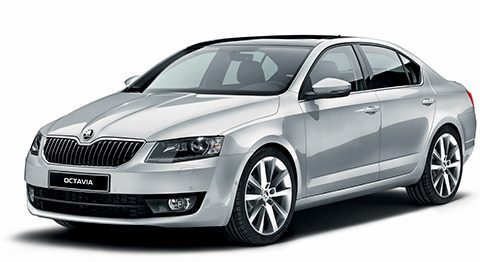

Škoda Octavia
je automobil nižší střední třídy vyráběný českou automobilkou Škoda od roku 1996. V modelovém roce 2001 prošla Octavia faceliftem. V roce 2004 byla na trh uvedena druhá generace vozu, která modernizací prošla na sklonku roku 2008. První generace byla po představení následníka dále úspěšně prodávána pod názvem Octavia Tour. V závěru roku 2010 byla její výroba ukončena a pod názvem Octavia Tour II se do nabídky dostala Octavia druhé generace, technicky totožná s modernizovaným provedením, ale s vnějším vzhledem odpovídajícím stavu před modernizací v roce 2008. Tento model však nebyl příliš úspěšný i proto, že byl nabízen pouze s benzínovými motory o objemu 1,4 a 1,6 l. Dalším důvodem je určitě i to že již v roce 2012 byl nahrazen modelem Rapid. Na rozdíl od Octavie Tour II, která byla de facto plnokrevnou octavií, jen s okleštěnou nabídkou motorů a výbavy, je Rapid pravověrným nízkonákladovým liftbackem. Třetí generace Octavie se objevila na sklonku roku 2012, v roce 2017 prošla faceliftem a v srpnu 2017 se stala třetím nejprodávanějším autem Evropy.
Verze
Kromě klasického liftbacku se Octavie prodává i jako kombi (Octavia Combi), kombi s náhonem všech kol (Octavia combi 4x4 I. a II. generace a oplastovaná verze Scout II. generace), liftback s náhonem všech kol (Octavia 4x4 I. generace) nebo designově mírně odlišená sportovní verze s výkonnějším motorem (Octavia RS). Zkratka RS znamená Rally sport.